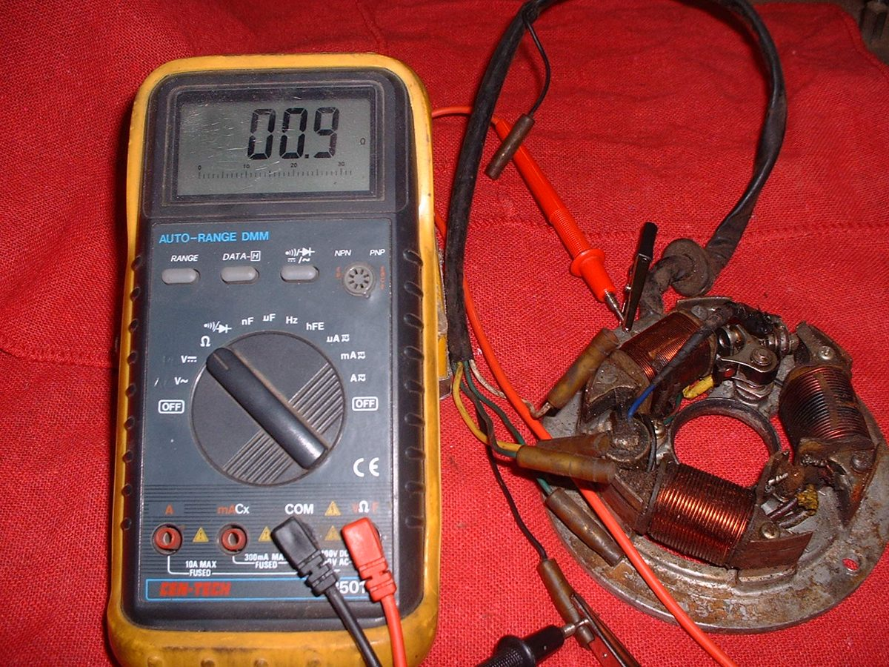
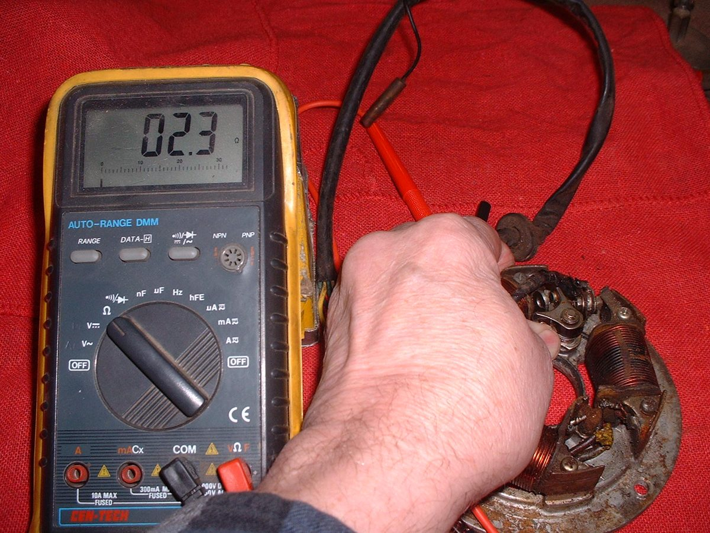
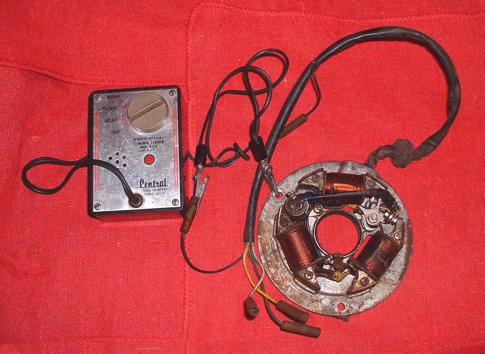
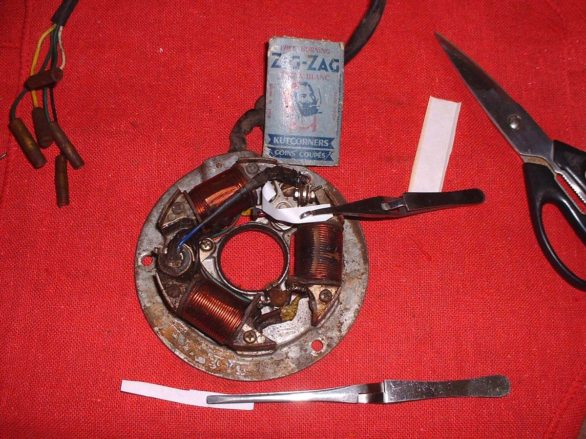

Setting ignition timing on points ignition means finding the exact moment the points open, because that is when the spark is made. The flywheel hides the points, so the moment must be found by a signal. Three simple signals work: a meter reading, a tone from a buzz box, or a strip of paper that pulls free. The moment is then matched to the timing marks: Set contact breaker points gap and timing and Set points timing on a flywheel magneto.
Safety
- Disconnect the battery on a battery and coil bike before touching ignition wires.
- Keep fingers clear of the flywheel and the stator when turning the engine.
- Keep acetone away from flames and sparks.
You need
- The stator plate exposed, with the flywheel off if it covers the points.
- One of: a meter set to ohms, a buzz box, or paper strips about 1 cm wide.
- The points wire disconnected from the coil or wiring, so the wire to the points is not shorted by other parts.
Steps with a multimeter
- Disconnect the points wire from the harness.
- Connect one meter lead to the points wire and the other to bare metal on the stator plate (earth).
- Turn the engine by hand in its normal direction. With the points closed, the meter shows a low resistance, near zero.
- Keep turning slowly. The reading changes at the moment the points open. Stop at that point and read the timing marks.
Steps with a buzz box
- Connect the clips to the points wire and to earth, as the box instructions state.
- Turn the flywheel slowly. The box buzzes while the points are closed and the tone changes as they open. That change marks the spark moment.
Steps with paper
- Cut a strip of thin paper about 1 cm wide.
- Place the strip between the closed points.
- Turn the flywheel gently while pulling lightly on the paper. It comes free at the moment the points open.
Finish
- Mark the flywheel and crankcase at the moment found, or compare with the marks already there.
- Clean the points with acetone. Petrol leaves a thin film on the contacts.
- Refit the flywheel and check the timing again: Check ignition timing.
Check your work
- The signal repeats at the same point on each turn of the engine.
- The points are clean and have no paper fibres left.
- Marks line up at the moment found.
When to go to a workshop
- If the signal does not change at all, the points may be shorted by worn insulation: Inspect, clean and replace contact breaker points.
- If the timing marks are missing and the engine type is not known, a workshop with a timing light and the manual can set it.